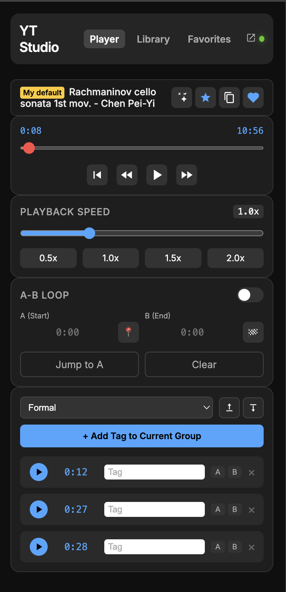

Professional playback controls, AB looping, timestamped notes, and a distraction-free sidebar. Designed for serious learners.
Download for Chrome
Master the pace of your learning with 0.1x speed adjustments and frame-by-frame seeking using WASD hotkeys.
Struggling with a complex section? Set A-B points instantly to loop and drill down until you understand it.
Drop timestamped markers with notes. One click jumps you back to exactly where you had that insight.
A clean, dark-themed sidebar that respects your attention. No algorithmic distractions, just your tools.